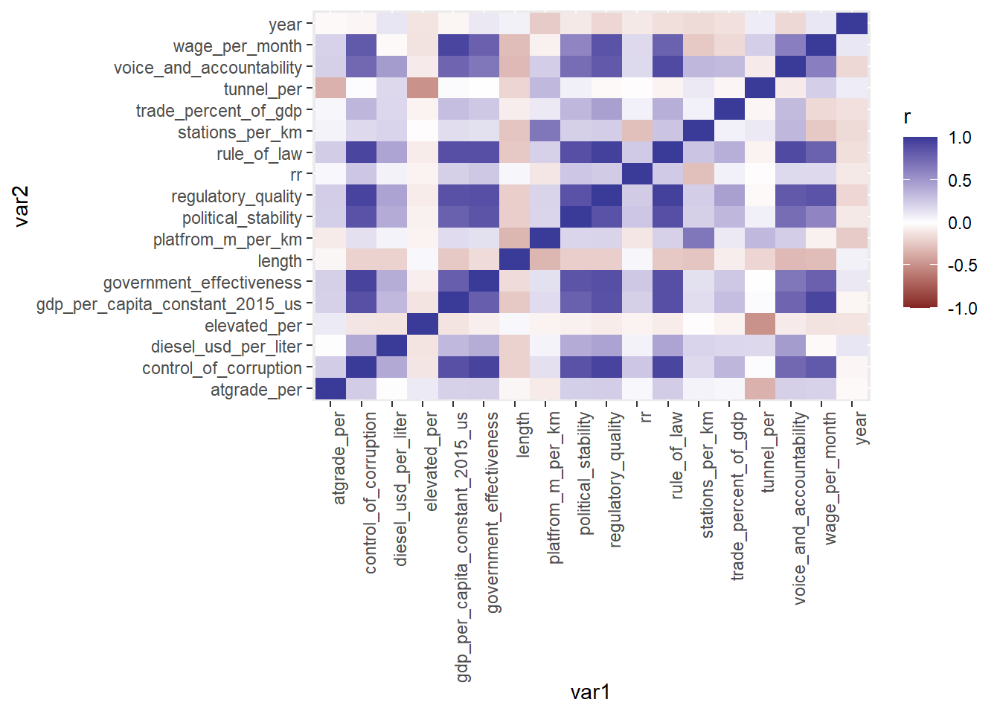
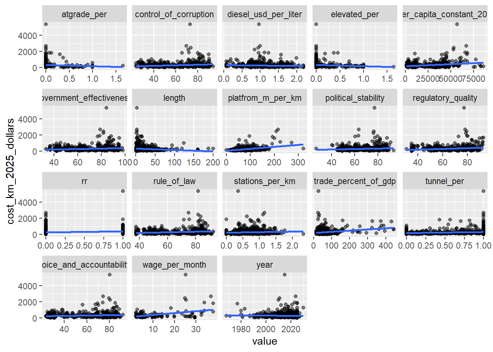
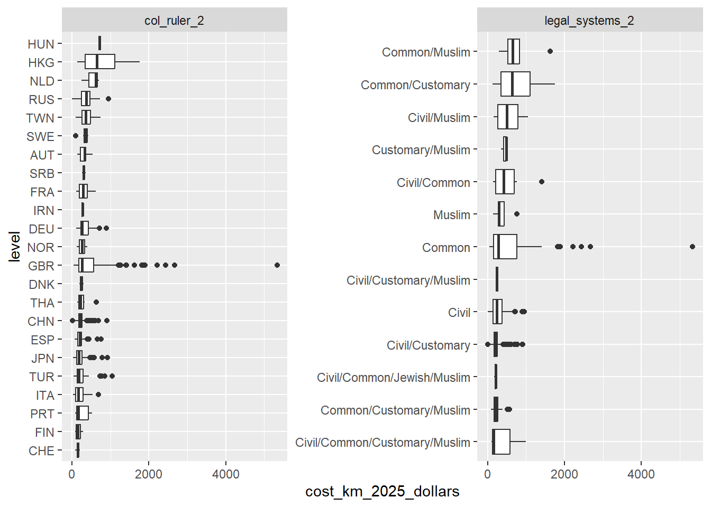
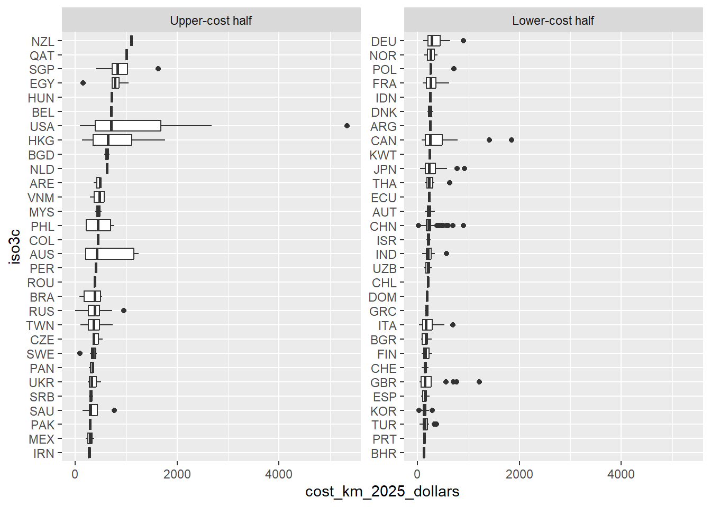
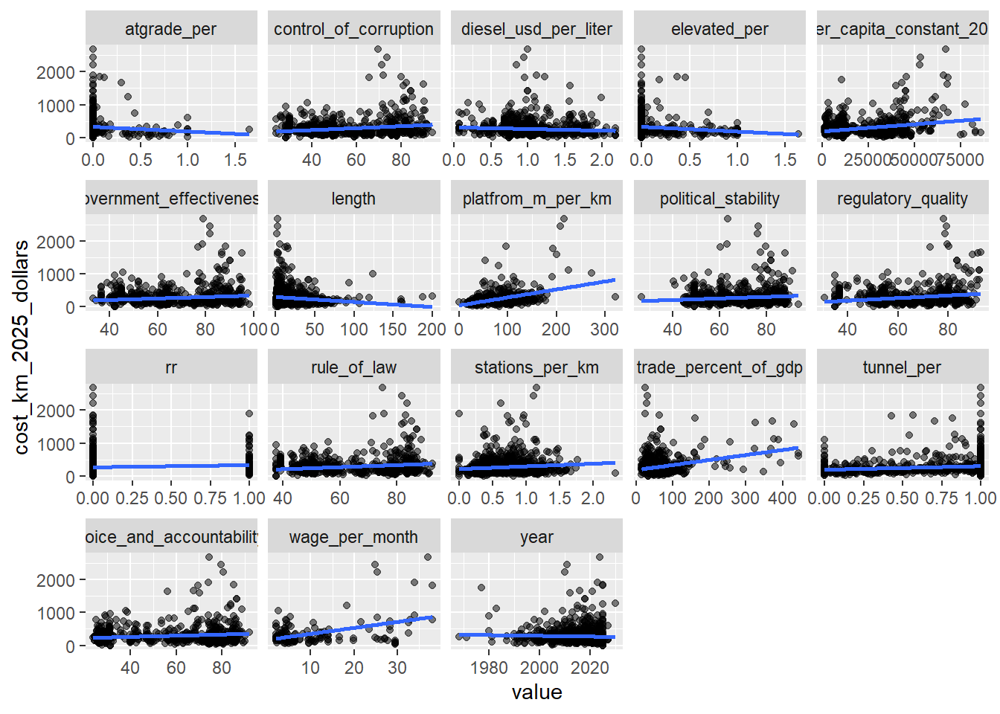
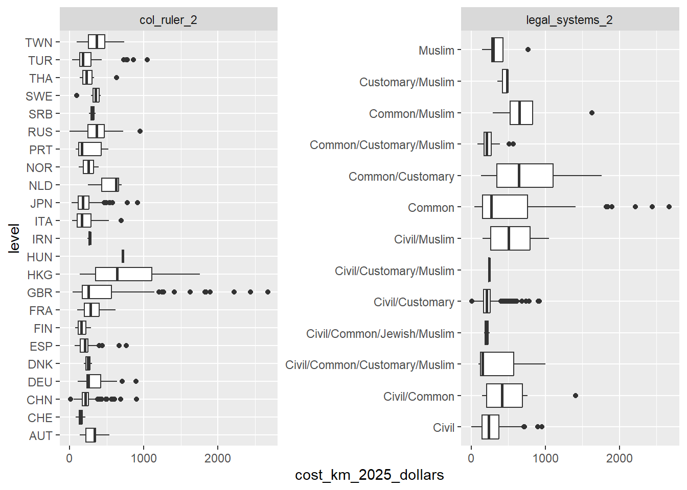
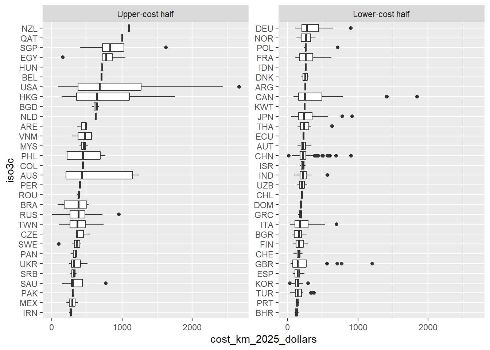

# vector of needed packages
pkgs <- c("tidyverse", "janitor", "countrycode", "readxl")
# install packages that are on needed list but not on list of installed
install.packages(setdiff(pkgs, rownames(installed.packages())))
library(tidyverse)
library(janitor) # to clean column names via clean_names()
library(countrycode) # to unify country codes to one format
library(readxl) # to import one sheet of multi-sheet excel fileCapstone Data Exploration
To do:
Make sure its same type of measurement as a2016 data (ex real/nominal, ppp, etc)
get steel data
clean
join
get concrete/cement data
clean
join
data explore
- remove outlier (usa), redo var relations explore
Setup
## Source: NYU Marron Institute of Urban Management. (2025b, January 27). "Data".
## Transit Costs Project. https://transitcosts.com/data/
transit_data <- read.csv("data/transit_costs_project_data.csv") %>%
clean_names() %>% # standardizes column name format (lowercase, _ as seperator)
mutate(across(where(is.character), \(x) na_if(x, ""))) # "" values -> NA
## Source: University of Ottawa. (2008). Alphabetical Index of the Political
## Entities and Corresponding Legal Systems . Juriglobe.
## https://www.juriglobe.ca/eng/sys-juri/index-alpha.php
legal_origins_data <- read.csv("data/legal_origins_data.csv") %>%
clean_names() %>%
mutate(across(where(is.character), \(x) na_if(x, "")))
## Source: Hensel, P. R. (2018, November 13). ICOW Colonial History Data.
## https://paulhensel.org/icowcol.html
colonize_data <- read.csv("data/col_data.csv") %>%
clean_names() %>%
mutate(across(where(is.character), \(x) na_if(x, "")))
## Source: World Bank Group. (2026, October 8). World development indicators.
## DataBank.
## https://databank.worldbank.org/source/world-development-indicators
wb_data <- read.csv("data/wb_gdppp_gov_data.csv") %>%
clean_names() %>%
mutate(across(where(is.character), \(x) na_if(x, "")))
## Source: International Labour Orginization. (n.d.). Labour statistics for ILO
## sectors. ILOSTAT. ilostat.ilo.org/databases/ilo-sectors/
wage_data <- read.csv("data/const_wage_data.csv") %>%
clean_names() %>%
mutate(across(where(is.character), \(x) na_if(x, "")))
## Source: World Bank Group. (2025, April 24). Global fuel prices database - world
## bank data catalog. Data Catalog.
## https://datacatalog.worldbank.org/search/dataset/0066829/global-fuel-prices-database
diesel_a2016_data <- read_excel("data/Global_Fuel_Prices_Database.xlsx",
sheet = "Diesel USD") %>%
rename_with(\(nm) as.character(excel_numeric_to_date(as.numeric(nm))),
.cols = matches("^\\d+$")) %>%
clean_names() %>%
mutate(across(where(is.character), \(x) na_if(x, "")))
## Source: World Bank Group. (n.d.). WDI Database Archives. DataBank.
## https://databank.worldbank.org/source/wdi-database-archives#
diesel_b2016_data <- read.csv("data/wb_diesel_b2016_data.csv") %>%
clean_names() %>%
mutate(across(where(is.character), \(x) na_if(x, "")))Data Cleaning
Merger preparation
# From countrycode: detects country code type
### guess_field(transit_data$country) # iso2c: 97% match
# Add variable that contains the country's iso3c code
transit_data_1 <- transit_data %>%
mutate(iso3c = countrycode(country, "iso2c", "iso3c",
custom_match = c("UK" = "GBR", "DR" = "DOM"))) %>%
relocate(iso3c, .after = country)# default min = 80%
# guess_field(toupper(legal_origins_data$political_entities), min_similarity = 0)
# no match, use "country.name"
# Claude (Opus 5.5) code
legal_origins_data_1 <- legal_origins_data %>%
mutate(
name_clean = gsub("\\s*\\(minus[^)]*\\)", "", political_entities),
name_clean = gsub("\\s+", " ", name_clean),
iso3c = countrycode(name_clean, "country.name", "iso3c",
custom_match = c("GUAM (USA)" = "GUM",
"MARIANA (USA)" = "MNP",
"SAMOA, AMERICAN (USA)" = "ASM",
"VIRGIN ISLANDS (USA)" = "VIR",
"PORTO RICO (ASS. USA)" = "PRI",
"MICRONESIA" = "FSM",
"HAWAII (USA)" = NA,
"LOUISIANA (USA)" = NA,
"NORTHERN IRELAND (UK)" = NA))) %>%
relocate(iso3c, .after = political_entities)# From countrycode: detects country code type
# guess_field(colonize_data$state) # cown: 99% match
# Austro-hungarian Empire is the sole colonizer w/out an iso3c code
# 3 tansit projects are in czechia, colonized by the austro-hungarian empire
# Using Austria iso3c code: shares a boarder with Czechia (Hungary does not)
# Add variable that contains the country's iso3c code
# Add variable that contains the colonizor's iso3c code
# Add variable that contains the ind_from's iso3c code
colonize_data_1 <- colonize_data %>%
mutate(iso3c = countrycode(state, "cown", "iso3c")) %>%
relocate(iso3c, .after = state) %>%
mutate(col_ruler_iso3c = countrycode(col_ruler, "cown", "iso3c",
custom_match = c("300" = "AUT"))) %>%
relocate(col_ruler_iso3c, .after = col_ruler) %>%
mutate(ind_from_iso3c = countrycode(ind_from, "cown", "iso3c")) %>%
relocate(ind_from_iso3c, .after = ind_from)# Rename year headers to just 4 digit year
wb_data_1 <- wb_data %>%
rename_with(\(x) substr(x, 2, 5), .cols = starts_with("x"))
wb_data_1 <- wb_data_1 %>%
filter(!is.na(country_code)) %>%
filter(!is.na(series_name))
# Lengthen df by year
wb_data_1 <- wb_data_1 %>%
pivot_longer(cols = '1960':'2025',
names_to = "year",
values_to = "value")
# Remove all character in series_name values from '-' on
wb_data_1 <- wb_data_1 %>%
mutate(series_name = trimws(gsub("-.*", "", series_name)))
# Remove series_code column (to widen more easily)
wb_data_1 <- wb_data_1 %>%
select(-'series_code')
# Widen df by series
wb_data_1 <- wb_data_1 %>%
pivot_wider(names_from = 'series_name', values_from = 'value')
# apply clean names to new headers from pivot_wider (series_code values)
wb_data_1 <- wb_data_1 %>%
clean_names()
# guess_field(wb_data_1$country_code)
# wb code nearly but not fully identical to iso3c
# Add variable that contains the country's iso3c code
wb_data_1 <- wb_data_1 %>%
mutate(iso3c = countrycode(country_code, "wb", "iso3c",
custom_match = c(XKX = "XKX", CHI = NA))) %>%
relocate(iso3c, .after = country_code)
# Change 'year' class, chr -> int (to match transit data in left_join)
wb_data_1 <- wb_data_1 %>%
mutate(year = as.integer(year))# filter to relevent observations
wage_data_1 <- wage_data %>%
filter(sex_label == "Total") %>%
filter(classif1_label == "ILO sector: Construction") %>%
filter(classif2_label == "Currency: 2021 PPP $")
# check # of unique nation-year combonations
# wage_data_1 %>%
# distinct(ref_area_label, time) %>%
# count()
# Equal to obs count in wage_data_1: there is now only 1 obs per
# nation-year combanation
# Check # lost countries after filtering
# unique(wage_data$ref_area_label) %>%
# length()
#
# unique(wage_data_1$ref_area_label) %>%
# length()
# -7
# guess_field(wage_data_1$ref_area_label)
# 92.3% match for un.name.en
wage_data_1 <- wage_data_1 %>%
mutate(iso3c = countrycode(ref_area_label, "country.name", "iso3c")) %>%
relocate(iso3c, .after = ref_area_label) %>%
rename(year = time) %>%
rename(wage_per_month = obs_value)# There are multiple observations per country, default_map_1_show seems to indicate
# the main observation
# filter to only default_map_1_show == 1
diesel_a2016_data_1 <- diesel_a2016_data %>%
filter(default_map_1_to_show == 1)
# create average value for years
start <- 2016
n_times <- 10
for (yr in start:(start + n_times - 1)) {
diesel_a2016_data_1 <- diesel_a2016_data_1 %>%
mutate("{yr}" := rowMeans(pick(contains(as.character(yr))), na.rm = TRUE))
}
# delete monthly values
diesel_a2016_data_1 <- diesel_a2016_data_1 %>%
select(-c("x2015_12_01":"x2025_04_01"))
# Lengthen df by year
diesel_a2016_data_1 <- diesel_a2016_data_1 %>%
pivot_longer(cols = '2016':'2025',
names_to = "year",
values_to = "diesel_usd_per_liter_a")
# guess_field(diesel_a2016_data_1$country_code)
# diesel_a2016_data_1 <- diesel_a2016_data_1 %>%
# mutate(iso3c = countrycode(country_code, "wb", "iso3c"))
# Only Curacao is not iso3c already
# correct curacao code and rename country_code to iso3c
diesel_a2016_data_1 <- diesel_a2016_data_1 %>%
mutate(country_code = if_else(country_code == "ANT", "CUW", country_code)) %>%
rename(iso3c = country_code)
# make year an int variable
diesel_a2016_data_1 <- diesel_a2016_data_1 %>%
mutate(year = as.integer(year))
# fix french guiana, martinique, and moldova iso3c codes
diesel_a2016_data_1 <- diesel_a2016_data_1 %>%
mutate(iso3c = if_else(diesel_lcu_liter == "French Guiana", "GUF", iso3c)) %>%
mutate(iso3c = case_when(country == "Martinique" ~ "MTQ",
country == "Moldova" ~ "MDA",
.default = iso3c))# regex by claude
# renames messy year headers to just the four digit year
diesel_b2016_data_1 <- diesel_b2016_data %>%
rename_with(\(nm) sub("^x(\\d{4})_yr\\d{4}$", "\\1", nm),
.cols = matches("^x\\d{4}_yr\\d{4}$"))
#CHOICE#
# pivot_longer by year, fills in missing year values by averaging nearest 1 or 2 value(s) of the country [there is usually a 1 year gap between observations]. Value is made NA if there aren't any values within 2 years
diesel_b2016_data_1 <- diesel_b2016_data_1 %>%
pivot_longer(`1960`:`2015`, names_to = "year", values_to = "diesel_usd_per_liter_b") %>%
mutate(diesel_usd_per_liter_b = as.numeric(diesel_usd_per_liter_b),
year = as.numeric(year)) %>%
mutate(prev = diesel_usd_per_liter_b, nxt = diesel_usd_per_liter_b,
prev_yr = if_else(is.na(diesel_usd_per_liter_b), NA, year), nxt_yr = prev_yr) %>%
group_by(country_name) %>%
fill(prev, prev_yr, .direction = "down") %>%
fill(nxt, nxt_yr, .direction = "up") %>%
ungroup() %>%
mutate(prev = if_else(year - prev_yr <= 2, prev, NA),
nxt = if_else(nxt_yr - year <= 2, nxt, NA),
diesel_usd_per_liter_b = coalesce(diesel_usd_per_liter_b, (prev + nxt) / 2, prev, nxt)) %>%
select(-prev, -nxt, -prev_yr, -nxt_yr)Warning: There was 1 warning in `mutate()`.
ℹ In argument: `diesel_usd_per_liter_b = as.numeric(diesel_usd_per_liter_b)`.
Caused by warning:
! NAs introduced by coercion# guess_field(diesel_b2016_data_1$country_code, min_similarity = 50)
# ~75% match for iso3c, genc3cm, wb, wb_api3c
# The issue is the data set includes regions
# List by claude
non_countries <- c("income", "IDA", "IBRD", "&", "dividend", "small states", "Small states",
"Euro area", "European", "World", "OECD", "Indebted", "Fragile",
"Least developed", "Arab League", "Baltics", "EASTERN EUROPE",
"Sub-Saharan", "SUB-SAHARAN", "South Asia", "North America",
"Africa Eastern", "Africa Western", "China and India",
"Channel Islands", "Data from", "Last Updated")
diesel_b2016_data_1 <- diesel_b2016_data_1 %>%
filter(!str_detect(country_name, paste(non_countries, collapse = "|")))
# guess_field(diesel_b2016_data_1$country_code, min_similarity = 50)
# now ~94% match for iso3c, genc3c, etc
# all remaining non-matches are duplicates containing no information
diesel_b2016_data_1 <- diesel_b2016_data_1 %>%
filter(!country_code %in% c("ADO", "ZAR", "IMY", "WBG", "ROM", "TMP", "KSV")) %>%
rename(iso3c = country_code)Join
# SELECT relevent variables from transit_data_1
joined <- transit_data_1 %>%
select(id, iso3c, city, line, phase, rr, length, tunnel, elevated, atgrade,
stations, platform_length_meters, year, cost_km_2025_dollars)
# ADD relevent variables from legal_origins_data_1
joined <- joined %>%
left_join(legal_origins_data_1 %>% select( iso3c, legal_systems, mixed_systems_components),
by = "iso3c")
# ADD relevent variables from colonize_data_1
joined <- joined %>%
left_join(colonize_data_1 %>% select(iso3c, col_ruler_iso3c),
by = "iso3c")
# ADD relevent variables from wb_data_1
joined <- joined %>%
left_join(wb_data_1 %>% select(-c(country_name, country_code)),
by = c("iso3c", "year"))
# ADD relevent variables from wage_data_1
joined <- joined %>%
left_join(wage_data_1 %>% select(iso3c, year, wage_per_month),
by = c("iso3c", "year"))
# ADD relevent variables from diesel_a2016_data_1
joined <- joined %>%
left_join(diesel_a2016_data_1 %>% select(iso3c, year, diesel_usd_per_liter_a),
by = c("iso3c", "year"))
# ADD relevent variables from diesel_a2016_data_1
joined <- joined %>%
left_join(diesel_b2016_data_1 %>% select(iso3c, year, diesel_usd_per_liter_b),
by = c("iso3c", "year"))Joined Clean
# Make all non-entries into NA using an anonymous function [\(x)]
joined_1 <- joined %>%
mutate(across(everything(), \(col) if_else(col %in% c(
"See Notes.", "See notes.", "#N/A", "N/A", "n/a", ".."), NA, col)))
# Clean length:stations and convert to numeric
joined_1 <- joined_1 %>%
# Remove footnote asterisks
mutate(across(length:stations, \(col) gsub("\\*", "", col))) %>%
# Make "x/y" entries NA, get rid of abiguous '36/22' station count
mutate(across(length:stations, \(col) if_else(grepl("/", col), NA, col))) %>%
# Convert to numeric
mutate(across(length:stations, as.numeric))
# Clean platform_length_meters and convert to numeric
joined_1 <- joined_1 %>%
# Claude code: if m is present, replace value with all digits and '.'s proceeding
# m until a non digit/. is found. (ex: '4 cars/120m' -> '120')
mutate(platform_length_meters = if_else(
grepl("m", platform_length_meters),
sub("^(.*[^0-9.])?([0-9.]+)m.*$", "\\2", platform_length_meters),
platform_length_meters)) %>%
# Make any values containing 'c' (cars), '/' or '-' into NA
mutate(platform_length_meters = if_else(
grepl("[c/-]", platform_length_meters), NA, platform_length_meters)) %>%
# Convert to numeric
mutate(platform_length_meters = as.numeric(platform_length_meters))
# Clean cost_km_2025_dollars and convert to numeric
joined_1 <- joined_1 %>%
mutate(cost_km_2025_dollars = gsub(",", "", cost_km_2025_dollars)) %>%
mutate(cost_km_2025_dollars = as.numeric(cost_km_2025_dollars))
# Clean government_effectiveness:trade_percent_of_gdp and convert to numeric
joined_1 <- joined_1 %>%
# Convert to numeric
mutate(across(government_effectiveness:trade_percent_of_gdp, as.numeric))
#CHOICE#
# note: split colonial past?
# Correct legal systems for cit(y/ies) that differ from their greater nation
joined_1 <- joined_1 %>%
mutate(legal_systems = if_else(
city %in% "Montreal", "Mixed", legal_systems)) %>%
mutate(mixed_systems_components = if_else(
city %in% "Montreal", "Civil/Common", mixed_systems_components))
# Unify legal system values format
joined_1 <- joined_1 %>%
mutate(mixed_systems_components = gsub(" ", "", mixed_systems_components)) %>%
mutate(mixed_systems_components = gsub("law", "", mixed_systems_components)) %>%
mutate(legal_systems = gsub(" ", "", legal_systems)) %>%
mutate(legal_systems = gsub("law", "", legal_systems)) %>%
mutate(mixed_systems_components = if_else(
is.na(mixed_systems_components), NA,
sapply(strsplit(mixed_systems_components, "/"), \(parts) paste(sort(parts), collapse = "/"))))
# create 1 diesel price variale
joined_1 <- joined_1 %>%
mutate(diesel_usd_per_liter = coalesce(
diesel_usd_per_liter_a, diesel_usd_per_liter_b))
# remove opbservations without dependent var values
joined_1 <- joined_1 %>%
filter(!is.na(cost_km_2025_dollars))Transform Variables
# Make variables
joined_2 <- joined_1 %>%
# Make variables for length of rail type/length of rail
mutate(tunnel_per = tunnel/length) %>%
mutate(elevated_per = elevated/length) %>%
mutate(atgrade_per = atgrade/length) %>%
# Make variables for stations/km and platform m/km
mutate(stations_per_km = stations/length) %>%
mutate(platfrom_m_per_km = stations_per_km*platform_length_meters) %>%
#CHOICE#
# Make col_ruler_2 where uncolonized countries are marked as their own col origin
mutate(col_ruler_2 = if_else(is.na(col_ruler_iso3c), iso3c, col_ruler_iso3c)) %>%
# Make legal_systems_2, where 'Mixed' _> value of mixed_systems_components
mutate(legal_systems_2 = if_else(
legal_systems == "Mixed", mixed_systems_components, legal_systems))
# Remove irrelevent variables
joined_2_trim <- joined_2 %>%
select(-c(id, tunnel, elevated, atgrade, stations, platform_length_meters,
legal_systems, mixed_systems_components, col_ruler_iso3c,
diesel_usd_per_liter_a, diesel_usd_per_liter_b))Data Exploration
round(cor_matrix, 2)
num_vars <- joined_2_trim %>% select(where(is.numeric), -cost_km_2025_dollars) %>% names()
cat_vars <- joined_2_trim %>% select(!where(is.numeric)) %>% names()
# Step 1: Correlation of each numeric variable with the dependent, ranked by strength
cor_out <- sapply(num_vars, \(v) cor(joined_2_trim[[v]], joined_2_trim$cost_km_2025_dollars, use = "complete.obs"))
round(cor_out[order(-abs(cor_out))], 2) platfrom_m_per_km wage_per_month
0.40 0.39
gdp_per_capita_constant_2015_us trade_percent_of_gdp
0.27 0.24
regulatory_quality rule_of_law
0.20 0.19
control_of_corruption voice_and_accountability
0.18 0.17
tunnel_per government_effectiveness
0.15 0.13
length rr
-0.12 0.12
political_stability elevated_per
0.11 -0.11
atgrade_per stations_per_km
-0.07 0.07
diesel_usd_per_liter year
-0.06 -0.03 # Step 2: Correlations among regressors (long format, reused below)
cor_mat <- joined_2_trim %>% select(all_of(num_vars)) %>% cor(use = "pairwise.complete.obs")
cor_long <- cor_mat %>%
as.data.frame() %>%
mutate(var1 = rownames(cor_mat)) %>%
pivot_longer(-var1, names_to = "var2", values_to = "r")
ggplot(cor_long, aes(x = var1, y = var2, fill = r)) +
geom_tile() +
scale_fill_gradient2(limits = c(-1, 1)) +
theme(axis.text.x = element_text(angle = 90, hjust = 1))
# Step 3: Flag highly correlated regressor pairs (multicollinearity risk)
cor_long %>%
filter(var1 < var2, abs(r) > 0.8) %>%
arrange(desc(abs(r)))# A tibble: 18 × 3
var1 var2 r
<chr> <chr> <dbl>
1 regulatory_quality rule_of_law 0.959
2 control_of_corruption regulatory_quality 0.946
3 control_of_corruption government_effectiveness 0.944
4 control_of_corruption rule_of_law 0.933
5 gdp_per_capita_constant_2015_us wage_per_month 0.932
6 rule_of_law voice_and_accountability 0.907
7 government_effectiveness rule_of_law 0.879
8 political_stability rule_of_law 0.879
9 gdp_per_capita_constant_2015_us rule_of_law 0.878
10 government_effectiveness regulatory_quality 0.878
11 control_of_corruption gdp_per_capita_constant_2015_us 0.876
12 gdp_per_capita_constant_2015_us regulatory_quality 0.871
13 control_of_corruption political_stability 0.865
14 political_stability regulatory_quality 0.862
15 regulatory_quality wage_per_month 0.856
16 government_effectiveness political_stability 0.853
17 control_of_corruption wage_per_month 0.826
18 regulatory_quality voice_and_accountability 0.824# Step 4: Outcome vs. every numeric variable, one faceted plot
joined_2_trim %>%
select(cost_km_2025_dollars, all_of(num_vars)) %>%
pivot_longer(-cost_km_2025_dollars, names_to = "var", values_to = "value") %>%
ggplot(aes(x = value, y = cost_km_2025_dollars)) +
geom_point(alpha = 0.5) +
geom_smooth(method = "lm", se = FALSE) +
facet_wrap(~ var, scales = "free_x")`geom_smooth()` using formula = 'y ~ x'Warning: Removed 3325 rows containing non-finite outside the scale range
(`stat_smooth()`).Warning: Removed 3325 rows containing missing values or values outside the scale range
(`geom_point()`).
# Step 5: Outcome by every (relevent) categorical variable
# col_ruler_2 and legal_systems_2
joined_2_trim %>%
select(cost_km_2025_dollars, all_of(cat_vars)) %>%
select(-c(city, line, phase, iso3c)) %>%
pivot_longer(-cost_km_2025_dollars, names_to = "var", values_to = "level",
values_transform = as.character) %>%
ggplot(aes(x = cost_km_2025_dollars,
y = reorder(level, cost_km_2025_dollars, median, na.rm = TRUE))) +
geom_boxplot() +
facet_wrap(~ var, scales = "free_y") +
labs(y = "level")
# by country
joined_2_trim %>%
group_by(iso3c) %>%
mutate(med = median(cost_km_2025_dollars, na.rm = TRUE)) %>%
ungroup() %>%
mutate(half = factor(if_else(dense_rank(med) <= n_distinct(iso3c) / 2,
"Lower-cost half", "Upper-cost half"),
levels = c("Upper-cost half", "Lower-cost half"))) %>%
ggplot(aes(x = cost_km_2025_dollars,
y = reorder(iso3c, cost_km_2025_dollars, median, na.rm = TRUE))) +
geom_boxplot() +
facet_wrap(~ half, scales = "free_y") +
labs(y = "iso3c")
# Step 6: Bivariate regression for each numeric variable (slope and p-value)
biv <- t(sapply(num_vars, \(v)
summary(lm(reformulate(v, "cost_km_2025_dollars"), data = joined_2_trim))$coefficients[2, c(1, 4)]))
round(biv, 3) Estimate Pr(>|t|)
rr 121.926 0.000
length -1.716 0.000
year -1.168 0.271
government_effectiveness 2.730 0.000
control_of_corruption 3.323 0.000
political_stability 2.866 0.000
regulatory_quality 4.448 0.000
rule_of_law 3.706 0.000
voice_and_accountability 2.092 0.000
gdp_per_capita_constant_2015_us 0.005 0.000
trade_percent_of_gdp 1.459 0.000
wage_per_month 22.803 0.000
diesel_usd_per_liter -51.336 0.042
tunnel_per 119.335 0.000
elevated_per -157.201 0.005
atgrade_per -153.701 0.063
stations_per_km 64.527 0.019
platfrom_m_per_km 2.430 0.000joined_2_trim_no_max <- joined_2_trim %>%
filter(row_number() != which.max(cost_km_2025_dollars))
num_vars <- joined_2_trim_no_max %>% select(where(is.numeric), -cost_km_2025_dollars) %>% names()
cat_vars <- joined_2_trim_no_max %>% select(!where(is.numeric)) %>% names()
# Step 1: Correlation of each numeric variable with the dependent, ranked by strength
cor_out <- sapply(num_vars, \(v) cor(joined_2_trim_no_max[[v]], joined_2_trim_no_max$cost_km_2025_dollars, use = "complete.obs"))
round(cor_out[order(-abs(cor_out))], 2) wage_per_month platfrom_m_per_km
0.43 0.40
trade_percent_of_gdp gdp_per_capita_constant_2015_us
0.29 0.28
regulatory_quality rule_of_law
0.21 0.19
control_of_corruption voice_and_accountability
0.19 0.17
tunnel_per length
0.16 -0.13
government_effectiveness elevated_per
0.13 -0.12
political_stability stations_per_km
0.11 0.10
atgrade_per rr
-0.08 0.08
diesel_usd_per_liter year
-0.07 -0.04 # Step 2: Correlations among regressors (long format, reused below)
cor_mat <- joined_2_trim_no_max %>% select(all_of(num_vars)) %>% cor(use = "pairwise.complete.obs")
cor_long <- cor_mat %>%
as.data.frame() %>%
mutate(var1 = rownames(cor_mat)) %>%
pivot_longer(-var1, names_to = "var2", values_to = "r")
ggplot(cor_long, aes(x = var1, y = var2, fill = r)) +
geom_tile() +
scale_fill_gradient2(limits = c(-1, 1)) +
theme(axis.text.x = element_text(angle = 90, hjust = 1))# Step 3: Flag highly correlated regressor pairs (multicollinearity risk)
cor_long %>%
filter(var1 < var2, abs(r) > 0.8) %>%
arrange(desc(abs(r)))# A tibble: 18 × 3
var1 var2 r
<chr> <chr> <dbl>
1 regulatory_quality rule_of_law 0.959
2 control_of_corruption regulatory_quality 0.946
3 control_of_corruption government_effectiveness 0.944
4 control_of_corruption rule_of_law 0.933
5 gdp_per_capita_constant_2015_us wage_per_month 0.931
6 rule_of_law voice_and_accountability 0.907
7 political_stability rule_of_law 0.878
8 government_effectiveness rule_of_law 0.878
9 gdp_per_capita_constant_2015_us rule_of_law 0.878
10 government_effectiveness regulatory_quality 0.877
11 control_of_corruption gdp_per_capita_constant_2015_us 0.876
12 gdp_per_capita_constant_2015_us regulatory_quality 0.871
13 control_of_corruption political_stability 0.865
14 political_stability regulatory_quality 0.862
15 regulatory_quality wage_per_month 0.854
16 government_effectiveness political_stability 0.853
17 regulatory_quality voice_and_accountability 0.824
18 control_of_corruption wage_per_month 0.824# Step 4: Outcome vs. every numeric variable, one faceted plot
joined_2_trim_no_max %>%
select(cost_km_2025_dollars, all_of(num_vars)) %>%
pivot_longer(-cost_km_2025_dollars, names_to = "var", values_to = "value") %>%
ggplot(aes(x = value, y = cost_km_2025_dollars)) +
geom_point(alpha = 0.5) +
geom_smooth(method = "lm", se = FALSE) +
facet_wrap(~ var, scales = "free_x")`geom_smooth()` using formula = 'y ~ x'Warning: Removed 3324 rows containing non-finite outside the scale range
(`stat_smooth()`).Warning: Removed 3324 rows containing missing values or values outside the scale range
(`geom_point()`).
# Step 5: Outcome by every (relevent) categorical variable
# col_ruler_2 and legal_systems_2
joined_2_trim_no_max %>%
select(cost_km_2025_dollars, all_of(cat_vars)) %>%
select(-c(city, line, phase, iso3c)) %>%
pivot_longer(-cost_km_2025_dollars, names_to = "var", values_to = "level",
values_transform = as.character) %>%
ggplot(aes(x = cost_km_2025_dollars, y = level)) +
geom_boxplot() +
facet_wrap(~ var, scales = "free_y")
# by country
joined_2_trim_no_max %>%
group_by(iso3c) %>%
mutate(med = median(cost_km_2025_dollars, na.rm = TRUE)) %>%
ungroup() %>%
mutate(half = factor(if_else(dense_rank(med) <= n_distinct(iso3c) / 2,
"Lower-cost half", "Upper-cost half"),
levels = c("Upper-cost half", "Lower-cost half"))) %>%
ggplot(aes(x = cost_km_2025_dollars,
y = reorder(iso3c, cost_km_2025_dollars, median, na.rm = TRUE))) +
geom_boxplot() +
facet_wrap(~ half, scales = "free_y") +
labs(y = "iso3c")
# Step 6: Bivariate regression for each numeric variable (slope and p-value)
biv <- t(sapply(num_vars, \(v)
summary(lm(reformulate(v, "cost_km_2025_dollars"), data = joined_2_trim_no_max))$coefficients[2, c(1, 4)]))
round(biv, 3) Estimate Pr(>|t|)
rr 66.380 0.012
length -1.528 0.000
year -1.085 0.226
government_effectiveness 2.243 0.000
control_of_corruption 2.907 0.000
political_stability 2.370 0.000
regulatory_quality 3.916 0.000
rule_of_law 3.169 0.000
voice_and_accountability 1.785 0.000
gdp_per_capita_constant_2015_us 0.004 0.000
trade_percent_of_gdp 1.519 0.000
wage_per_month 18.101 0.000
diesel_usd_per_liter -49.004 0.018
tunnel_per 110.621 0.000
elevated_per -144.930 0.002
atgrade_per -141.344 0.039
stations_per_km 81.220 0.000
platfrom_m_per_km 2.430 0.000# create correlation matrix
cor_matrix <- joined_2_trim %>%
select(where(is.numeric)) %>%
cor(use = "pairwise.complete.obs")
cor_round <- round(cor_matrix, 2)
colnames(cor_round) <- abbreviate(colnames(cor_round), 4)
cor_round rr lngt year c__2 gvr_ cn__ plt_ rgl_
rr 1.00 0.04 -0.10 0.12 0.26 0.27 0.27 0.24
length 0.04 1.00 0.07 -0.12 -0.16 -0.20 -0.22 -0.22
year -0.10 0.07 1.00 -0.03 0.11 -0.04 -0.10 -0.18
cost_km_2025_dollars 0.12 -0.12 -0.03 1.00 0.13 0.18 0.11 0.20
government_effectiveness 0.26 -0.16 0.11 0.13 1.00 0.94 0.85 0.88
control_of_corruption 0.27 -0.20 -0.04 0.18 0.94 1.00 0.87 0.95
political_stability 0.27 -0.22 -0.10 0.11 0.85 0.87 1.00 0.86
regulatory_quality 0.24 -0.22 -0.18 0.20 0.88 0.95 0.86 1.00
rule_of_law 0.25 -0.24 -0.14 0.19 0.88 0.93 0.88 0.96
voice_and_accountability 0.17 -0.31 -0.17 0.17 0.67 0.74 0.72 0.82
gdp_per_capita_constant_2015_us 0.22 -0.24 -0.04 0.27 0.80 0.88 0.79 0.87
trade_percent_of_gdp 0.07 -0.08 -0.14 0.24 0.26 0.35 0.34 0.45
wage_per_month 0.18 -0.29 0.11 0.39 0.79 0.83 0.59 0.86
diesel_usd_per_liter 0.06 -0.20 0.12 -0.06 0.39 0.41 0.40 0.44
tunnel_per -0.01 -0.18 0.09 0.15 0.01 0.02 0.07 -0.02
elevated_per -0.05 0.04 -0.12 -0.11 -0.07 -0.12 -0.06 -0.08
atgrade_per 0.04 -0.04 -0.03 -0.07 0.22 0.24 0.23 0.23
stations_per_km -0.28 -0.26 -0.16 0.07 0.15 0.18 0.22 0.23
platfrom_m_per_km -0.11 -0.33 -0.23 0.40 0.15 0.14 0.20 0.20
rl__ vc__ g___ t___ wg__ d___ tnn_ elv_
rr 0.25 0.17 0.22 0.07 0.18 0.06 -0.01 -0.05
length -0.24 -0.31 -0.24 -0.08 -0.29 -0.20 -0.18 0.04
year -0.14 -0.17 -0.04 -0.14 0.11 0.12 0.09 -0.12
cost_km_2025_dollars 0.19 0.17 0.27 0.24 0.39 -0.06 0.15 -0.11
government_effectiveness 0.88 0.67 0.80 0.26 0.79 0.39 0.01 -0.07
control_of_corruption 0.93 0.74 0.88 0.35 0.83 0.41 0.02 -0.12
political_stability 0.88 0.72 0.79 0.34 0.59 0.40 0.07 -0.06
regulatory_quality 0.96 0.82 0.87 0.45 0.86 0.44 -0.02 -0.08
rule_of_law 1.00 0.91 0.88 0.38 0.78 0.43 -0.05 -0.08
voice_and_accountability 0.91 1.00 0.77 0.32 0.63 0.48 -0.09 -0.09
gdp_per_capita_constant_2015_us 0.88 0.77 1.00 0.31 0.93 0.33 0.02 -0.12
trade_percent_of_gdp 0.38 0.32 0.31 1.00 -0.17 0.19 -0.04 -0.05
wage_per_month 0.78 0.63 0.93 -0.17 1.00 -0.03 0.23 -0.13
diesel_usd_per_liter 0.43 0.48 0.33 0.19 -0.03 1.00 0.18 -0.12
tunnel_per -0.05 -0.09 0.02 -0.04 0.23 0.18 1.00 -0.49
elevated_per -0.08 -0.09 -0.12 -0.05 -0.13 -0.12 -0.49 1.00
atgrade_per 0.24 0.22 0.22 0.04 0.21 -0.01 -0.35 0.10
stations_per_km 0.27 0.34 0.16 0.07 -0.24 0.20 0.10 -0.01
platfrom_m_per_km 0.22 0.23 0.17 0.10 -0.06 0.06 0.33 -0.05
atg_ st__ p___
rr 0.04 -0.28 -0.11
length -0.04 -0.26 -0.33
year -0.03 -0.16 -0.23
cost_km_2025_dollars -0.07 0.07 0.40
government_effectiveness 0.22 0.15 0.15
control_of_corruption 0.24 0.18 0.14
political_stability 0.23 0.22 0.20
regulatory_quality 0.23 0.23 0.20
rule_of_law 0.24 0.27 0.22
voice_and_accountability 0.22 0.34 0.23
gdp_per_capita_constant_2015_us 0.22 0.16 0.17
trade_percent_of_gdp 0.04 0.07 0.10
wage_per_month 0.21 -0.24 -0.06
diesel_usd_per_liter -0.01 0.20 0.06
tunnel_per -0.35 0.10 0.33
elevated_per 0.10 -0.01 -0.05
atgrade_per 1.00 0.06 -0.09
stations_per_km 0.06 1.00 0.67
platfrom_m_per_km -0.09 0.67 1.00cor_round %>%
as.data.frame() %>%
rownames_to_column("var1") %>%
pivot_longer(-var1, names_to = "var2", values_to = "r") %>%
ggplot(aes(var2, var1, fill = r)) +
geom_tile() +
geom_text(aes(label = r), size = 3) +
scale_fill_gradient2(limits = c(-1, 1)) +
labs(x = NULL, y = NULL, fill = "r") +
theme(axis.text.x = element_text(angle = 45, hjust = 1))
# create a table from the matrix and sort by absolute value of correlation
cor_matrix %>%
as.table() %>%
as.data.frame() %>%
filter(as.character(Var1) < as.character(Var2)) %>%
rename(cor = Freq) %>%
arrange(desc(abs(cor))) Var1 Var2
1 regulatory_quality rule_of_law
2 control_of_corruption regulatory_quality
3 control_of_corruption government_effectiveness
4 control_of_corruption rule_of_law
5 gdp_per_capita_constant_2015_us wage_per_month
6 rule_of_law voice_and_accountability
7 government_effectiveness rule_of_law
8 political_stability rule_of_law
9 gdp_per_capita_constant_2015_us rule_of_law
10 government_effectiveness regulatory_quality
11 control_of_corruption gdp_per_capita_constant_2015_us
12 gdp_per_capita_constant_2015_us regulatory_quality
13 control_of_corruption political_stability
14 political_stability regulatory_quality
15 regulatory_quality wage_per_month
16 government_effectiveness political_stability
17 control_of_corruption wage_per_month
18 regulatory_quality voice_and_accountability
19 gdp_per_capita_constant_2015_us government_effectiveness
20 gdp_per_capita_constant_2015_us political_stability
21 government_effectiveness wage_per_month
22 rule_of_law wage_per_month
23 gdp_per_capita_constant_2015_us voice_and_accountability
24 control_of_corruption voice_and_accountability
25 political_stability voice_and_accountability
26 platfrom_m_per_km stations_per_km
27 government_effectiveness voice_and_accountability
28 voice_and_accountability wage_per_month
29 political_stability wage_per_month
30 elevated_per tunnel_per
31 diesel_usd_per_liter voice_and_accountability
32 regulatory_quality trade_percent_of_gdp
33 diesel_usd_per_liter regulatory_quality
34 diesel_usd_per_liter rule_of_law
35 control_of_corruption diesel_usd_per_liter
36 cost_km_2025_dollars platfrom_m_per_km
37 diesel_usd_per_liter political_stability
38 diesel_usd_per_liter government_effectiveness
39 cost_km_2025_dollars wage_per_month
40 rule_of_law trade_percent_of_gdp
41 atgrade_per tunnel_per
42 control_of_corruption trade_percent_of_gdp
43 political_stability trade_percent_of_gdp
44 stations_per_km voice_and_accountability
45 platfrom_m_per_km tunnel_per
46 diesel_usd_per_liter gdp_per_capita_constant_2015_us
47 length platfrom_m_per_km
48 trade_percent_of_gdp voice_and_accountability
49 length voice_and_accountability
50 gdp_per_capita_constant_2015_us trade_percent_of_gdp
51 length wage_per_month
52 rr stations_per_km
53 rule_of_law stations_per_km
54 cost_km_2025_dollars gdp_per_capita_constant_2015_us
55 political_stability rr
56 control_of_corruption rr
57 government_effectiveness rr
58 government_effectiveness trade_percent_of_gdp
59 length stations_per_km
60 rr rule_of_law
61 regulatory_quality rr
62 gdp_per_capita_constant_2015_us length
63 length rule_of_law
64 stations_per_km wage_per_month
65 atgrade_per rule_of_law
66 atgrade_per control_of_corruption
67 cost_km_2025_dollars trade_percent_of_gdp
68 platfrom_m_per_km voice_and_accountability
69 regulatory_quality stations_per_km
70 atgrade_per regulatory_quality
71 tunnel_per wage_per_month
72 platfrom_m_per_km year
73 atgrade_per political_stability
74 atgrade_per voice_and_accountability
75 gdp_per_capita_constant_2015_us rr
76 atgrade_per government_effectiveness
77 political_stability stations_per_km
78 atgrade_per gdp_per_capita_constant_2015_us
79 length political_stability
80 platfrom_m_per_km rule_of_law
81 length regulatory_quality
82 atgrade_per wage_per_month
83 platfrom_m_per_km regulatory_quality
84 diesel_usd_per_liter stations_per_km
85 diesel_usd_per_liter length
86 cost_km_2025_dollars regulatory_quality
87 control_of_corruption length
88 platfrom_m_per_km political_stability
89 cost_km_2025_dollars rule_of_law
90 diesel_usd_per_liter trade_percent_of_gdp
91 length tunnel_per
92 diesel_usd_per_liter tunnel_per
93 control_of_corruption cost_km_2025_dollars
94 regulatory_quality year
95 control_of_corruption stations_per_km
96 rr wage_per_month
97 voice_and_accountability year
98 rr voice_and_accountability
99 cost_km_2025_dollars voice_and_accountability
100 gdp_per_capita_constant_2015_us platfrom_m_per_km
101 trade_percent_of_gdp wage_per_month
102 stations_per_km year
103 gdp_per_capita_constant_2015_us stations_per_km
104 government_effectiveness length
105 cost_km_2025_dollars tunnel_per
106 government_effectiveness platfrom_m_per_km
107 government_effectiveness stations_per_km
108 control_of_corruption platfrom_m_per_km
109 rule_of_law year
110 trade_percent_of_gdp year
111 cost_km_2025_dollars government_effectiveness
112 elevated_per wage_per_month
113 cost_km_2025_dollars length
114 diesel_usd_per_liter elevated_per
115 elevated_per gdp_per_capita_constant_2015_us
116 elevated_per year
117 cost_km_2025_dollars rr
118 diesel_usd_per_liter year
119 control_of_corruption elevated_per
120 cost_km_2025_dollars political_stability
121 cost_km_2025_dollars elevated_per
122 wage_per_month year
123 platfrom_m_per_km rr
124 government_effectiveness year
125 stations_per_km tunnel_per
126 platfrom_m_per_km trade_percent_of_gdp
127 atgrade_per elevated_per
128 political_stability year
129 rr year
130 tunnel_per year
131 atgrade_per platfrom_m_per_km
132 tunnel_per voice_and_accountability
133 elevated_per voice_and_accountability
134 elevated_per regulatory_quality
135 elevated_per rule_of_law
136 length trade_percent_of_gdp
137 political_stability tunnel_per
138 atgrade_per cost_km_2025_dollars
139 elevated_per government_effectiveness
140 stations_per_km trade_percent_of_gdp
141 cost_km_2025_dollars stations_per_km
142 rr trade_percent_of_gdp
143 length year
144 cost_km_2025_dollars diesel_usd_per_liter
145 elevated_per political_stability
146 platfrom_m_per_km wage_per_month
147 diesel_usd_per_liter rr
148 atgrade_per stations_per_km
149 diesel_usd_per_liter platfrom_m_per_km
150 elevated_per trade_percent_of_gdp
151 elevated_per platfrom_m_per_km
152 elevated_per rr
153 rule_of_law tunnel_per
154 atgrade_per trade_percent_of_gdp
155 gdp_per_capita_constant_2015_us year
156 trade_percent_of_gdp tunnel_per
157 control_of_corruption year
158 length rr
159 atgrade_per length
160 atgrade_per rr
161 elevated_per length
162 cost_km_2025_dollars year
163 atgrade_per year
164 diesel_usd_per_liter wage_per_month
165 regulatory_quality tunnel_per
166 gdp_per_capita_constant_2015_us tunnel_per
167 control_of_corruption tunnel_per
168 elevated_per stations_per_km
169 rr tunnel_per
170 atgrade_per diesel_usd_per_liter
171 government_effectiveness tunnel_per
cor
1 0.958803892
2 0.946393292
3 0.943819303
4 0.933033748
5 0.931869751
6 0.907147297
7 0.878683151
8 0.878577621
9 0.878294265
10 0.877608188
11 0.875890115
12 0.871041859
13 0.865249309
14 0.861903649
15 0.855757603
16 0.853282636
17 0.825620714
18 0.824183141
19 0.799254552
20 0.788153214
21 0.785371893
22 0.782753620
23 0.765371317
24 0.744561245
25 0.717218467
26 0.670864480
27 0.670105064
28 0.625216703
29 0.590605979
30 -0.492328763
31 0.475794519
32 0.454820765
33 0.436852398
34 0.433128840
35 0.408606270
36 0.399662590
37 0.397916546
38 0.389838583
39 0.388883846
40 0.377798440
41 -0.347942708
42 0.347171426
43 0.339572187
44 0.337924771
45 0.333791348
46 0.332057536
47 -0.327064271
48 0.322476585
49 -0.309810443
50 0.305912197
51 -0.293539323
52 -0.284092932
53 0.273915324
54 0.273626701
55 0.266966640
56 0.266334324
57 0.259994971
58 0.259498789
59 -0.255852152
60 0.247457122
61 0.243872811
62 -0.243381567
63 -0.242129838
64 -0.239565071
65 0.237110689
66 0.237034368
67 0.236147598
68 0.234736587
69 0.234193395
70 0.232146039
71 0.229326207
72 -0.228257704
73 0.226001580
74 0.224896530
75 0.224397210
76 0.223127714
77 0.220565984
78 0.219627696
79 -0.215415858
80 0.215374783
81 -0.215005897
82 0.212434669
83 0.202957184
84 0.199440503
85 -0.196946802
86 0.196771889
87 -0.196387840
88 0.196075416
89 0.188505373
90 0.188086537
91 -0.184133235
92 0.181467572
93 0.180975694
94 -0.178768405
95 0.176666956
96 0.175915984
97 -0.173733060
98 0.173469855
99 0.171019246
100 0.166873780
101 -0.165670870
102 -0.164425061
103 0.158930714
104 -0.156366976
105 0.148742830
106 0.146414744
107 0.145940452
108 0.143960216
109 -0.142454383
110 -0.135385155
111 0.131237080
112 -0.127914690
113 -0.124579743
114 -0.123710751
115 -0.122489896
116 -0.121045002
117 0.117457643
118 0.116217538
119 -0.115965828
120 0.112962366
121 -0.110847045
122 0.109466996
123 -0.108292017
124 0.106373763
125 0.103148040
126 0.100364348
127 0.097965654
128 -0.097165119
129 -0.096366111
130 0.090092817
131 -0.087932049
132 -0.086979618
133 -0.085370896
134 -0.084459490
135 -0.084160340
136 -0.078803707
137 0.074854367
138 -0.074575470
139 -0.072308822
140 0.070861279
141 0.069908937
142 0.068643843
143 0.065640468
144 -0.062137301
145 -0.062033861
146 -0.061807593
147 0.060224278
148 0.057315904
149 0.057005256
150 -0.054498058
151 -0.054031779
152 -0.052425576
153 -0.052053952
154 0.043550812
155 -0.043451893
156 -0.041817620
157 -0.041123923
158 0.039766227
159 -0.037840668
160 0.037696348
161 0.036075725
162 -0.032438493
163 -0.027953790
164 -0.027016158
165 -0.024284498
166 0.022982767
167 0.018267789
168 -0.012473719
169 -0.011873898
170 -0.007398205
171 0.005584654ggplot(transit_data_1, aes(x = year)) +
geom_histogram()`stat_bin()` using `bins = 30`. Pick better value `binwidth`.Warning: Removed 37 rows containing non-finite outside the scale range
(`stat_bin()`).
# ggplot(wage_data_1, aes(x = year)) +
# geom_histogram()# NAs per variable
joined_2_trim %>%
is.na() %>%
colSums() %>%
enframe(name = "variable", value = "n_na") %>%
ggplot(aes(x = n_na, y = reorder(variable, n_na))) +
geom_col() +
labs(x = "Number of NAs", y = NULL)
joined_2_trim %>%
nrow()[1] 1155joined_2_trim %>%
filter(if_any(-c(platfrom_m_per_km, atgrade_per, elevated_per), is.na)) %>%
nrow()[1] 1021joined_2_trim %>%
filter(if_all(
-c(platfrom_m_per_km, atgrade_per, elevated_per), \(col) !is.na(col))) %>%
nrow()[1] 134# Distribution barchart of legal_systems_2
joined_2 %>%
ggplot(aes(y = fct_infreq(legal_systems_2))) +
geom_bar() +
labs(x = "Count", y = NULL)
# Distribution of countries, grouped by legal_systems_2
joined_2 %>%
ggplot(aes(y = legal_systems_2, fill = iso3c)) +
geom_bar(position = "fill") +
labs(x = "Proportion", y = NULL, fill = NULL) +
guides(fill = guide_legend(ncol = 4))
joined_2 %>%
ggplot(aes(y = iso3c)) +
geom_bar() +
facet_wrap(~ legal_systems_2, scales = "free_y", ncol = 4) +
labs(x = "Count", y = NULL) +
theme(text = element_text(size = 7))
joined_2 %>%
ggplot(aes(x = "", fill = iso3c)) +
geom_bar(width = 1) +
coord_polar(theta = "y") +
labs(fill = NULL) +
theme_void()
Graveyard
Code Dump
ggplot(joined_2_trim, aes(x = cost_km_2025_dollars)) +
geom_boxplot()
Diagnostics/bug-finding code used
diesel_b2016_data_1 %>%
count(iso3c, year) %>%
filter(n > 1)# A tibble: 0 × 3
# ℹ 3 variables: iso3c <chr>, year <dbl>, n <int>joined %>% filter(!is.na(diesel_usd_per_liter_a), !is.na(diesel_usd_per_liter_b)) [1] id iso3c
[3] city line
[5] phase rr
[7] length tunnel
[9] elevated atgrade
[11] stations platform_length_meters
[13] year cost_km_2025_dollars
[15] legal_systems mixed_systems_components
[17] col_ruler_iso3c government_effectiveness
[19] control_of_corruption political_stability
[21] regulatory_quality rule_of_law
[23] voice_and_accountability gdp_per_capita_constant_2015_us
[25] trade_percent_of_gdp wage_per_month
[27] diesel_usd_per_liter_a diesel_usd_per_liter_b
<0 rows> (or 0-length row.names)